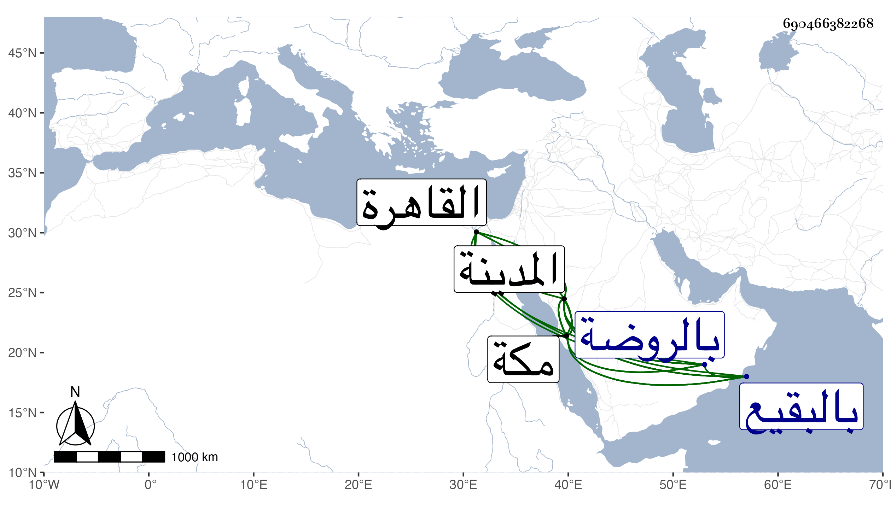

0902Sakhawi.DawLamic.ITO20230111-ara1.EIS1600.690466382268
Biography ID: 690466382268
402
محمد ناصر الدين أبو الفرج أخو الثلاثة قبله وشقيق ثانيهم ووالد الشمس محمد الآتي . ولد في صفر سنة ست وثمانمائة بالمدينة النبوية ونشأ بها فحفظ القرآن وقام به على العادة في سنة عشرين بمكة والعمدة والمنهاج وألفيتي الحديث والنحو ، وعرض في سنة تسع عشرة فما بعدها بمكة والمدينة على خلق ، فممن أجاز له من الشافعية ابن الجزري والولي العراقي والشمس محمد بن أحمد الكفيري وعبد الرحمن ابن محمد بن صالح بن عبد الرحمن بن حسين القطان المدنيان وابن سلامة والمحب ابن ظهيرة ، ومن الحنفية علي بن محمد بن علي الأنصاري الزرندي والجمال محمد بن إبراهيم المرشدي وحسن بن أحمد بن محمد بن ناصر الهندي المكي ، ومن المالكية التقي الفاسي وأبوه أحمد بن علي ، وجود القرآن على الزين بن عياش وغيره ، وتفقه بالجمال الكازروني والنجم الواسطي والشمس الكفيري وبأخيه الشرف أبي الفتح وبه كان جل انتفاعه وعنه وعن الجمال والنجم أخذ النحو وكذا عن النور الزرندي والجلال المرشدي وعن النجم وحده أخذ المعاني والبيان وأصول الفقه وعن الجمال والزرندي وغيرهما في التفسير وعن الزين بن القطان دروسا من شرح العمدة ، ولازم أخاه في قراءة الحديث بحيث قرأ عليه كثيرا وتدرب به في المتون والرجال وكذا قرأ كثيرا على الجمال الكازروني وأذنا له والنجم وغير واحد في الإفتاء والتدريس ، وسمع على الشموس محمد بن محمد بن محمد بن المحب وابن الجزري وابن البيطار والشرف الجرهي والنور المحلي وأبي عبد الله الفاسي والجلال المرشدي والتقي بن فهد وبعض ذلك بقراءته ودخل القاهرة في سنة ثلاث وأربعين وأقام التي بعدها وأخذ بها عن شيخنا وأشياء وكتب عنه الامالي بل كتب قطعة من فهرسته وقراها وكذا قرأ الخصال وشح النخبة كلاهما وله والأربعين التي خرجها لوالده والجمعة للنسائي وجملة ، ووصفه بالشيخ الإمام العلامة المفنن الأوحد مفيد الطالبين صدر المدرسين ، بل سمع على والده في صغره الكثير كالصحيحين وجامع الترمذي وسنن أبي داود والدارقطني بفوت فيهما ومجالس الخلال العشرة ونسخة إبراهيم ابن سعد وجزء ابن قلنبا وجزءا ابن مقسم ونسخة همام والأولين من فوائد سخنام والأربعين التي خرجها شيخنا له والأربعين لابن سعد النيسا بوري وسداسيات الرازي والجزء الذي انتقاه الذهبي للعفيف المطري ومسلسل الفقهاء وبعض الغيلانيات وجل ذلك بقراءة أخيه ومن لفظه المسلسل، وأجاز له الشهاب الواسطي والقبابي والتدمري والزين الزركشي وخلق . ومن القدماء عائشة ابنة ابن عبد الهادي وغيرها ، وخرج له ابن فهد مشيخة وفهرستا ، وحدث بالكثير من لفظه وبقراءة ولده وغيره أخذ عنه أهل بلده والغرباء وشيخ شيخ المدينة والنبوية ومسندها بدون مدافع وكنت ممن لقيه بمكة ثم بالمدينة في سنة ست وخمسين وأخذت عنه أشياء ، وكان حسن الشكالة نير الشيبة مهابا مع فضيلة وسكون خدم من كتب العلوم المنهاج الأصلي وألفية ابن ملك والتلخيص والجمل في المنطق وعروض الأندلسي وغيرها بحواش مفيدة بعد كتابته لها بخطه . وقال في ضبط بحور النظم
| إذا رمت ضبطا للبحور فهاكها | فعدتها ست وعشر كذا نقل |
| طويل مديد مع بسيط ووافر | كذا كامل هزج ورزج مع الرمل |
| سريعا شرحت للخفيف مضارعا | قضيب اجتثثت القرب داركت في العمل |
مات في صبيحة يوم الجمعة العشرين من المحرم سنة ثمانين وصلى عليه بعد الجمعة بالروضة ودفن بالبقيع عند والده رحمهما الله وإيانا .
